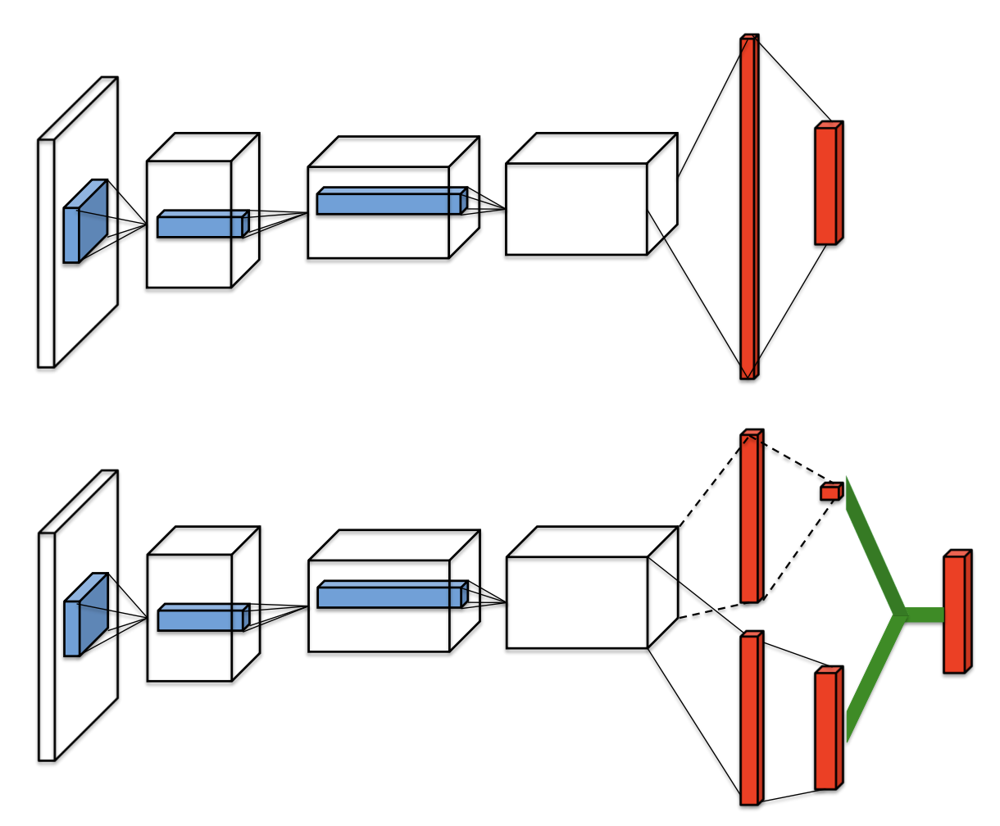
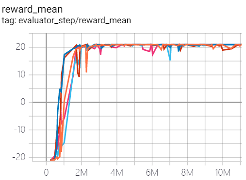
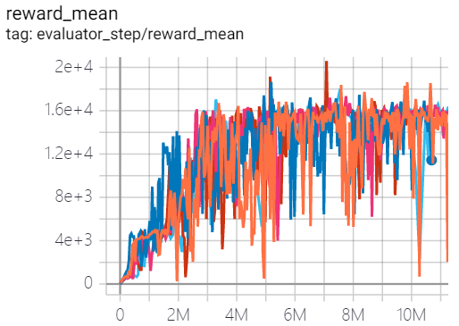
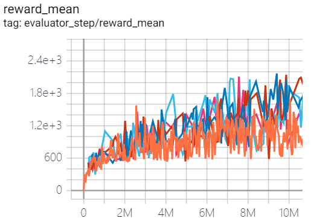
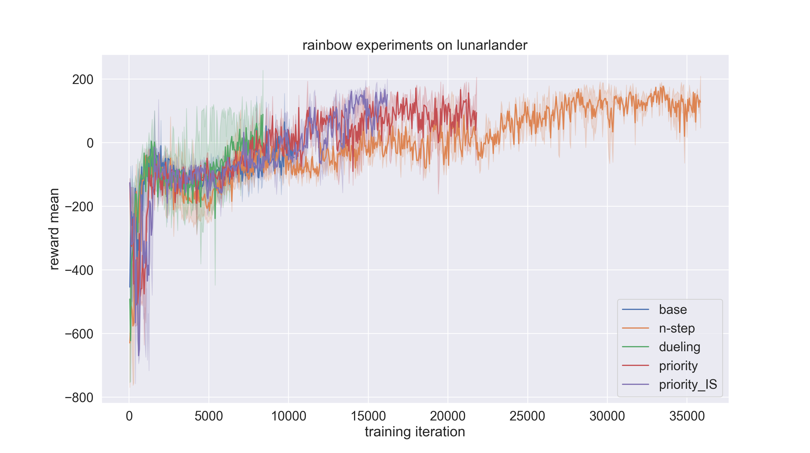

Rainbow¶
Overview¶
Rainbow was proposed in Rainbow: Combining Improvements in Deep Reinforcement Learning. It combines many independent improvements to DQN, including: Double DQN, priority, dueling head, multi-step TD-loss, C51 (distributional RL) and noisy net.
Quick Facts¶
Rainbow is a model-free and value-based RL algorithm.
Rainbow only support discrete action spaces.
Rainbow is an off-policy algorithm.
Usually, Rainbow use eps-greedy, multinomial sample or noisy net for exploration.
Rainbow can be equipped with RNN.
The DI-engine implementation of Rainbow supports multi-discrete action space.
Key Equations or Key Graphs¶
Double DQN¶
Double DQN, proposed in Deep Reinforcement Learning with Double Q-learning, is a common variant of DQN. Conventional DQN maintains a target q network, which is periodically updated with the current q network. Double DQN addresses the overestimation of q-value by decoupling. It selects action with the current q network but estimates the q-value with the target network, formally:
Prioritized Experience Replay(PER)¶
DQN samples uniformly from the replay buffer. Ideally, we want to sample more frequently those transitions from which there is much to learn. As a proxy for learning potential, prioritized experience replay samples transitions with probabilities relative to the last encountered absolute TD error, formally:
In the original paper of PER, the authors show that PER achieve improvements on most of the 57 Atari games, especially on Gopher, Atlantis, James Bond 007, Space Invaders, etc.
Dueling Network¶
The dueling network is a neural network architecture designed for value based RL. It features two streams of computation streams, one for state value function \(V\) and one for the state-dependent action advantage function \(A\). Both of them share a common convolutional encoder, and are merged by a special aggregator to produce an estimate of the state-action value function \(Q\) as shown in figure.
{kind=link}
It is unidentifiable that given \(Q\) we cannot recover \(V\) and \(A\) uniquely. So we force the advantage function zero by the following factorization of action values:
In this way, it can address the issue of identifiability and increase the stability of the optimization.The network architecture of Rainbow is a dueling network architecture adapted for use with return distributions.
Multi-step Learning¶
A multi-step variant of DQN is then defined by minimizing the alternative loss:
where the truncated n-step return is defined as:
In the paper Revisiting Fundamentals of Experience Replay, the authors analyze that a greater capacity of replay buffer substantially increases the performance when multi-step learning is used, and they think the reason is that multi-step learning brings larger variance, which is compensated by a larger replay buffer.
Distribution RL¶
Distributional RL was first proposed in A Distributional Perspective on Reinforcement Learning. It learns to approximate the distribution of returns instead of the expected return using a discrete distribution, whose support is \(\boldsymbol{z}\), a vector with \(N_{\text {atoms }} \in \mathbb{N}^{+}atoms\), defined by \(z^{i}=v_{\min }+(i-1) \frac{v_{\max }-v_{\min }}{N_{\text {atoms }}-1}\) for \(i \in\left\{1, \ldots, N_{\text {atoms }}\right\}\). The approximate distribution \(d_{t}\) at time t is defined on this support, with the probability \(p_{\theta}^{i}\left(S_{t}, A_{t}\right)\) on each atom \(i\), such that \(d_{t}=\left(z, p_{\theta}\left(S_{t}, A_{t}\right)\right)\). A distributinal variant of Q-learning is then derived by minimizing the Kullbeck-Leibler divergence between the distribution \(d_{t}\) and the target distribution \(d_{t}^{\prime} \equiv\left(R_{t+1}+\gamma_{t+1} z, \quad p_{\bar{\theta}}\left(S_{t+1}, \bar{a}_{t+1}^{*}\right)\right)\), formally:
Here \(\Phi_{\boldsymbol{z}}\) is a L2-projection of the target distribution onto the fixed support \(\boldsymbol{z}\).
Noisy Net¶
Noisy Nets use a noisy linear layer that combines a deterministic and noisy stream:
Over time, the network can learn to ignore the noisy stream, but at different rates in different parts of the state space, allowing state-conditional exploration with a form of self-annealing. It usually achieves improvements against \(\epsilon\)-greedy when the action space is large, e.g. Montezuma’s Revenge, because \(\epsilon\)-greedy tends to quickly converge to a one-hot distribution before the rewards of the large numbers of actions are collected enough. In our implementation, the noises are resampled before each forward both during data collection and training. When double Q-learning is used, the target network also resamples the noises before each forward. During the noise sampling, the noises are first sampled from \(N(0,1)\), then their magnitudes are modulated via a sqrt function with their signs preserved, i.e. \(x \rightarrow x.sign() * x.sqrt()\).
Intergrated Method¶
First, We replace the 1-step distributional loss with multi-step loss:
Then, we comine the multi-step distributinal loss with Double DQN by selecting the greedy action using the online network and evaluating such action using the target network. The KL loss is also used to prioritize the transitions:
The network has a shared representation, which is then fed into a value stream \(v_\eta\) with \(N_{atoms}\) outputs, and into an advantage stream \(a_{\psi}\) with \(N_{atoms} \times N_{actions}\) outputs, where \(a_{\psi}^i(a)\) will denote the output corresponding to atom i and action a. For each atom \(z_i\), the value and advantage streams are aggregated, as in dueling DQN, and then passed through a softmax layer to obtain the normalized parametric distributions used to estimate the returns’ distributions:
Extensions¶
- Rainbow can be combined with:
RNN
Implementation¶
The default config is defined as follows:
- class ding.policy.rainbow.RainbowDQNPolicy(cfg: dict, model: Optional[Union[type, torch.nn.modules.module.Module]] = None, enable_field: Optional[List[str]] = None)[source]
- Overview:
- Rainbow DQN contain several improvements upon DQN, including:
target network
dueling architecture
prioritized experience replay
n_step return
noise net
distribution net
Therefore, the RainbowDQNPolicy class inherit upon DQNPolicy class
- Config:
ID
Symbol
Type
Default Value
Description
Other(Shape)
1
typestr
rainbow
RL policy register name, refer toregistryPOLICY_REGISTRYthis arg is optional,a placeholder2
cudabool
False
Whether to use cuda for networkthis arg can be diff-erent from modes3
on_policybool
False
Whether the RL algorithm is on-policyor off-policy4
prioritybool
True
Whether use priority(PER)priority sample,update priority5
model.v_minfloat
-10
Value of the smallest atomin the support set.6
model.v_maxfloat
10
Value of the largest atomin the support set.7
model.n_atomint
51
Number of atoms in the support setof the value distribution.8
other.eps.startfloat
0.05
Start value for epsilon decay. It’ssmall because rainbow use noisy net.9
other.eps.endfloat
0.05
End value for epsilon decay.10
discount_factorfloat
0.97, [0.95, 0.999]
Reward’s future discount factor, aka.gammamay be 1 when sparsereward env11
nstepint
3, [3, 5]
N-step reward discount sum for targetq_value estimation12
learn.updateper_collectint
3
How many updates(iterations) to trainafter collector’s one collection. Onlyvalid in serial trainingthis args can be varyfrom envs. Bigger valmeans more off-policy
The network interface Rainbow used is defined as follows:
- class ding.model.template.q_learning.RainbowDQN(obs_shape: Union[int, ding.utils.type_helper.SequenceType], action_shape: Union[int, ding.utils.type_helper.SequenceType], encoder_hidden_size_list: ding.utils.type_helper.SequenceType = [128, 128, 64], head_hidden_size: Optional[int] = None, head_layer_num: int = 1, activation: Optional[torch.nn.modules.module.Module] = ReLU(), norm_type: Optional[str] = None, v_min: Optional[float] = - 10, v_max: Optional[float] = 10, n_atom: Optional[int] = 51)[source]
- Overview:
RainbowDQN network (C51 + Dueling + Noisy Block)
Note
RainbowDQN contains dueling architecture by default
- forward(x: torch.Tensor) Dict[source]
- Overview:
Use observation tensor to predict Rainbow output. Parameter updates with Rainbow’s MLPs forward setup.
- Arguments:
- x (
torch.Tensor): The encoded embedding tensor with
(B, N=hidden_size).
- x (
- Returns:
- outputs (
Dict): Run
MLPwithRainbowHeadsetups and return the result prediction dictionary.
- outputs (
- ReturnsKeys:
logit (
torch.Tensor): Logit tensor with same size as inputx.distribution (
torch.Tensor): Distribution tensor of size(B, N, n_atom)
- Shapes:
x (
torch.Tensor): \((B, N)\), where B is batch size and N is head_hidden_size.logit (
torch.FloatTensor): \((B, M)\), where M is action_shape.distribution(
torch.FloatTensor): \((B, M, P)\), where P is n_atom.
- Examples:
>>> model = RainbowDQN(64, 64) # arguments: 'obs_shape' and 'action_shape' >>> inputs = torch.randn(4, 64) >>> outputs = model(inputs) >>> assert isinstance(outputs, dict) >>> assert outputs['logit'].shape == torch.Size([4, 64]) >>> # default n_atom: int =51 >>> assert outputs['distribution'].shape == torch.Size([4, 64, 51])
Benchmark¶
environment |
best mean reward |
evaluation results |
config link |
comparison |
|---|---|---|---|---|
Pong (PongNoFrameskip-v4) |
21 |
 | Tianshou(21) |
|
Qbert (QbertNoFrameskip-v4) |
20600 |
 | Tianshou(16192.5) |
|
SpaceInvaders (SpaceInvadersNoFrame skip-v4) |
2168 |
 | Tianshou(1794.5) |
- P.S.：
The above results are obtained by running the same configuration on five different random seeds (0, 1, 2, 3, 4).
For the discrete action space algorithm, the Atari environment set is generally used for testing (including sub-environments Pong), and Atari environment is generally evaluated by the highest mean reward training 10M
env_step. For more details about Atari, please refer to Atari Env Tutorial .
Experiments on Rainbow Tricks¶
We conduct experiments on the lunarlander environment using rainbow (dqn) policy to compare the performance of n-step, dueling, priority, and priority_IS tricks with baseline. The code link for the experiments is here.
Note that the config file is set for dqn by default. If we want to adopt rainbow policy, we need to change the
type of policy as below.
lunarlander_dqn_create_config = dict(
env=dict(
type='lunarlander',
import_names=['dizoo.box2d.lunarlander.envs.lunarlander_env'],
),
env_manager=dict(type='subprocess'),
policy=dict(type='rainbow'),
)
The detailed experiments setting is stated below.
Experiments setting |
Remark |
|---|---|
base |
one step DQN (n-step=1, dueling=False, priority=False, priority_IS=False) |
n-step |
n step DQN (n-step=3, dueling=False, priority=False, priority_IS=False) |
dueling |
use dueling head trick (n-step=3, dueling=True, priority=False, priority_IS=False) |
priority |
use priority experience replay buffer (n-step=3, dueling=False, priority=True, priority_IS=False) |
priority_IS |
use importance sampling tricks (n-step=3, dueling=False, priority=True, priority_IS=True) |
reward_meanovertraining iterationis used as an evaluation metric.Each experiment setting is done for three times with random seed 0, 1, 2 and average the results to ensure stochasticity.
if __name__ == "__main__":
serial_pipeline([main_config, create_config], seed=0)
By setting the
exp_namein config file, the experiment results can be saved in specified path. Otherwise, it will be saved in‘./default_experiment’directory.
from easydict import EasyDict
from ding.entry import serial_pipeline
nstep = 1
lunarlander_dqn_default_config = dict(
exp_name='lunarlander_exp/base-one-step2',
env=dict(
......
The result is shown in the figure below. As we can see, with tricks on, the speed of convergence is increased by a large amount. In this experiment setting, dueling trick contributes most to the performance.
References¶
(DQN) Mnih, Volodymyr, et al. “Human-level control through deep reinforcement learning.” 2015; [https://deepmind-data.storage.googleapis.com/assets/papers/DeepMindNature14236Paper.pdf]
(Rainbow) Matteo Hessel, Joseph Modayil, Hado van Hasselt, Tom Schaul, Georg Ostrovski, Will Dabney, Dan Horgan, Bilal Piot, Mohammad Azar, David Silver: “Rainbow: Combining Improvements in Deep Reinforcement Learning”, 2017; [http://arxiv.org/abs/1710.02298 arXiv:1710.02298].
(Double DQN) Van Hasselt, Hado, Arthur Guez, and David Silver: “Deep reinforcement learning with double q-learning.”, 2016; [https://arxiv.org/abs/1509.06461 arXiv:1509.06461]
(PER) Schaul, Tom, et al.: “Prioritized Experience Replay.”, 2016; [https://arxiv.org/abs/1511.05952 arXiv:1511.05952]
William Fedus, Prajit Ramachandran, Rishabh Agarwal, Yoshua Bengio, Hugo Larochelle, Mark Rowland, Will Dabney: “Revisiting Fundamentals of Experience Replay”, 2020; [http://arxiv.org/abs/2007.06700 arXiv:2007.06700].
(Dueling network) Wang, Z., Schaul, T., Hessel, M., Hasselt, H., Lanctot, M., & Freitas: “Dueling network architectures for deep reinforcement learning”, 2016; [https://arxiv.org/abs/1511.06581 arXiv:1511.06581]
(Multi-step) Sutton, R. S., and Barto, A. G.: “Reinforcement Learning: An Introduction”. The MIT press, Cambridge MA. 1998;
(Distibutional RL) Bellemare, Marc G., Will Dabney, and Rémi Munos.: “A distributional perspective on reinforcement learning.”, 2017; [https://arxiv.org/abs/1707.06887 arXiv:1707.06887]
(Noisy net) Fortunato, Meire, et al.: “Noisy networks for exploration.”, 2017; [https://arxiv.org/abs/1706.10295 arXiv:1706.10295]